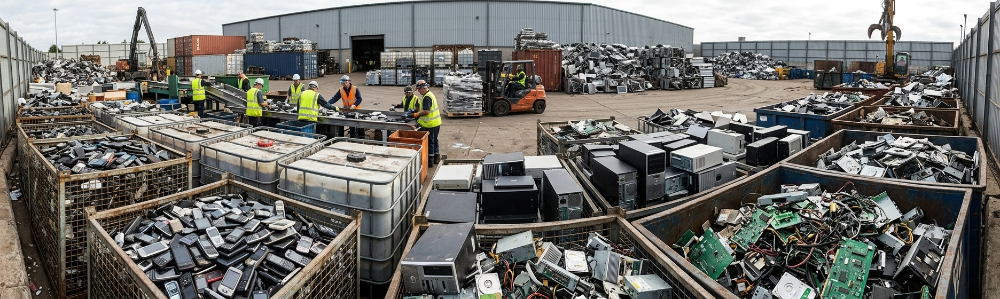

Getting Started with ResponsibleE-Waste Management
How to Manage E-Waste Responsibly
Managing electronic waste. responsibly does not require complicated changes. Start by taking better care of your devices, repairing them when possible, donating working electronics, and using authorized recycling facilities when they reach the end of their useful life. Every device you reuse or recycle responsibly helps reduce unnecessary waste.
Think Before You Throw It Away
Before throwing away an electronic device, ask yourself whether it can be repaired, reused, donated, or passed on to someone else. Remove personal data from devices before giving them away and keep batteries separate when required.
Simple Steps to Manage E-Waste
- Keep your electronic devices in good condition.
- Repair devices instead of replacing them whenever practical.
- Donate or sell electronics that are still working.
- Delete personal data before disposing of or giving away a device.
- Take unusable electronics to an authorized e-waste collection or recycling facility.
